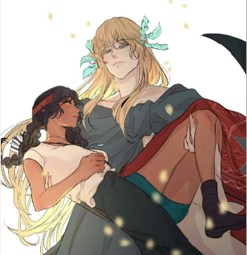

Dibujo digital: El dibujo digital se refiere a la creación de dibujos a través de un programa de dibujo digital. En lugar de usar lápiz y papel, los artistas digitales dibujan sobre una tableta o una computadora mediante otro dispositivo, como un mouse o un lápiz óptico.
su importancia: El dibujo digital nos permite una manipulación libre de la imagen y posibilidades casi infinitas de tratamiento, sería complejo representar en dibujo tradicional alguno de los efectos creados en digital ademas como hoy en dia el internet es una base muy importante para darse a conocer a las personas haciendo comiciones o tutoriales.
ilustracion realista: Es una técnica que mezcla lo tradicional y digital . Las ilustraciones realistas, tienden a ser una de las preferidas por los diseñadores, por el efecto que logra en los espectadores. Además, suele ser uno de los dibujos en el cual se necesita más tiempo, por el acabado en detalles .
ilustracion vectorial: Es el estilo más utilizado a la hora de diseñar flyers, banners, publicidades, caricaturas, logos, etc. En la ilustración digital vectorial, se crean dibujos mediante trazos y figuras. Además es una de las técnicas más fáciles de aprender, y si están interesados en dominarla, pueden llevar cursos de diseño. Un punto a favor de este estilo, es que es exclusivamente realizado en programas digitales. Se puede vectorizar en Illustrator, aunque hay otros, que en la actualidad, utilizan Corel Draw.
ilustracion pixel art: El estilo de la ilustración en pixel art es mayormente utilizando en los videjuegos y nos hace retroceder a los 90’s y comienzos del 2000, época en que éstos tomaron mayor protagonismo. Básicamente, consiste en realizar dibujos formados por cuadrados uniformes, de tal modo que esté pixeleado intencionalmente. También, se pueden diseñar algunas imágenes, dando una apariencia retro y vintage al finalizar el proyecto. Para realizar este tipo de diseño, Adobe Illustrator es nuestra mejor aliado.
ilustracion Comic: La ilustración al estilo de un cómic son las que vemos en las historietas de compañías como Marvel y DC, para realizarla, se necesita hacer un boceto, diseño, pintado, impresión, etc. Uno de los métodos más utilizados es el tinteo, lo que vendría a ser las rayas marcadas en los dibujos, creando la ilusión que éste se vea más real. Este tipo de dibujo digital une gran parte de las técnicas tradicionales y vectoriales. Así mismo se puede llegar a diseñarla solo digitalmente; aunque algunos prefieren dar sus últimos retoques a mano. Para poder hacer el cómic se utiliza herramientas de Adobe Photoshop y Abode Illustrator.